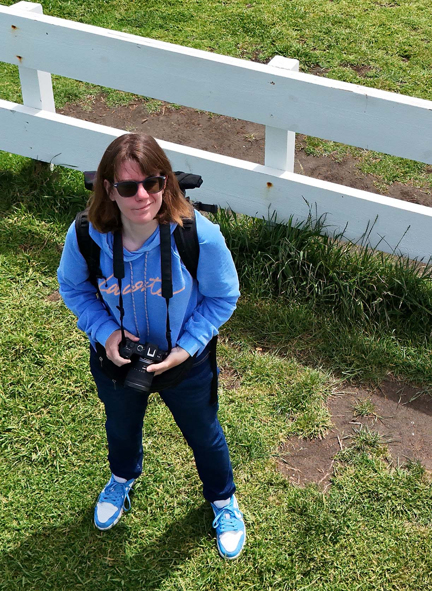

Hi, welcome on my website!
I am a senior AI/ML research scientist at the intersection of Machine Learning, Natural Language Processing, and Cybersecurity. My current work focuses on leveraging Generative AI and advanced analytics to build scalable, intelligent security solutions, and production-grade AI systems.
I am currently open to challenging full remote or Zurich-based (CH) roles where I can bridge the gap between cutting-edge AI research and large-scale production systems.
🎯As a research scientist at Proofpoint (formerly Hornetsecurity/Vade), I bridged the gap between state-of-the-art research and robust engineering. As a Product Owner, I designed an end-to-end RAG-based LLM chatbot for cybersecurity training that scales to entire companies with SLOs compatible with interactive use. I also lead a critical data-clustering project to automate threat detection, pioneered Explainable AI (XAI) initiatives to make our ML models transparent for end-users, and built the complete ML pipeline for e-mail classification.
Prior to joining Proofpoint, I was a research engineer at Huawei, where I engineered an end-to-end ML pipeline for hardware-failure prediction in hyperscale data centers using SATA/SAS SMART attributes. I was recognized with the Rising Star Award 2021 🏆.
Learn about what I do Get in touch with me